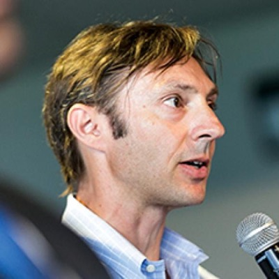
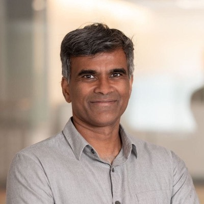
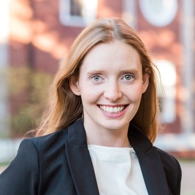
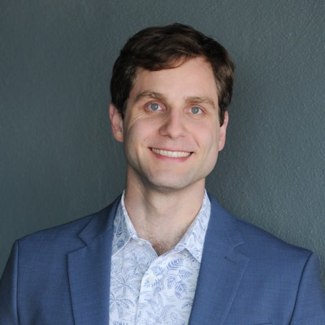
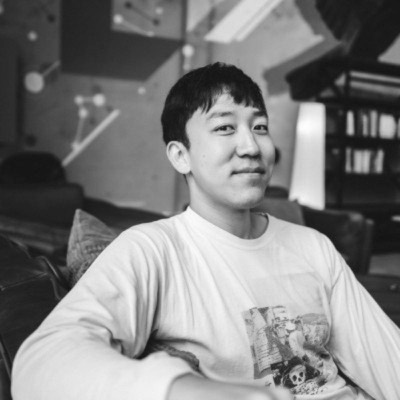
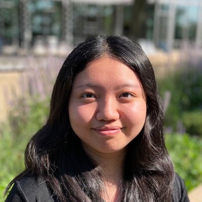
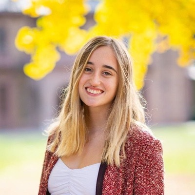
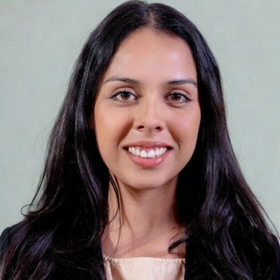
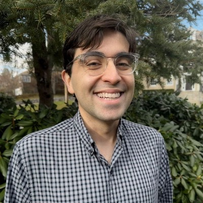

People
The Lab
Meet the crew behind The Bike Shop: the computer scientists, economists, engineers, coordinators, and leaders working to build bicycles for the mind.
Leadership

Jens is the Co-Founder and Academic Director of The Bike Shop. He is the Edwin A. and Betty L. Bergman Distinguished Service Professor at the Harris School of Public Policy at the University of Chicago. He founded the Crime Lab and the Education Lab—which he now directs and codirects respectively—to turn insights from economics, specifically from behavioral and data science, into social change to solve real world problems. Examples of real-world impact include partnering with the Mayor’s Office in New York City to help build and implement a new pretrial risk tool as part of the city’s goal to close Riker’s Island, and working with the Chicago Police Department to implement data-driven management changes that helped substantially reduce gun violence without increasing arrests. He recently authored “Unforgiving Places: The Unexpected Origins of American Gun Violence,” as discussed by Malcolm Gladwell in The New Yorker.

Sendhil is the Co-Founder and Academic Director of The Bike Shop. He is the Peter de Florez Professor at MIT with dual appointments in the departments of Economics and Electrical Engineering and Computer Science, and a principal investigator at the MIT Laboratory for Information and Decision Systems (LIDS). He is renowned for his frontier-leading work at the intersection of economics and computer science as well as for the vast span of his work across domains including health care, development, labor and workforce. He has previously launched successful non-profits and research institutes such as J-PAL and ideas42, co-founded a machine learning startup (Dandelion), and co-authored “Scarcity: Why Having Too Little Means So Much.” He is a recipient of the MacArthur “genius” Award, a winner of the Infosys Prize, has been designated a “Young Global Leader” by the World Economic Forum, labeled a “Top 100 Thinker” by Foreign Policy Magazine, and named to the “Smart List: 50 people who will change the world” by Wired Magazine (UK).
Bec is the Executive Director of The Bike Shop. She brings a decade of experience leading at the intersection of behavioral science, technology, and public policy. Most recently, she led a University of Chicago initiative translating metacognitive skill-building into workforce readiness training. Previously, she co-founded a behavioral science technology startup, served as a Senior Advisor in the Behavioural Economics Team of the Australian Government (BETA) overseeing randomized controlled trials across health, education, and employment policy, and was a management consultant at Bain & Co. She has also held a visiting fellowship at Harvard University focused on applied machine learning research, and has published work in AI and behavioral science. She holds an MBA from Harvard Business School and bachelor’s degrees in both economics and law from the University of Sydney, Australia.
Ashesh is the Silverman (1968) Family Career Development Assistant Professor of Economics at MIT and a principal investigator at the MIT Laboratory for Information and Decision Systems (LIDS). He is recognized as a leading young researcher at the interface of econometrics, machine learning, and public policy. His research has appeared in top economics journals (The Quarterly Journal of Economics; The Review of Economic Studies), leading statistics outlets (Journal of the American Statistical Association), and premier machine-learning conferences (ICML; NeurIPS). He has organized the Machine Learning in Economics Summer Institute, the premier summer workshop for graduate students working at the intersection of economics and machine learning. He earned his PhD in Economics from Harvard University, where he received the David A. Wells Prize for best dissertation and held an NSF Graduate Research Fellowship. He was selected for the Review of Economic Studies European Tour and the China Star Tour—honors reserved for the most promising early-career economists worldwide.
Daniel is the Head of Product Strategy and Development at The Bike Shop. He most recently worked at AWS where he was responsible for go-to-market strategy and business development for state and local government and education customers. Prior to AWS, Daniel built and led the North American business of an Australian SaaS edtech startup. He previously had roles leading strategic projects as a manager at Qantas Airways and a management consultant at Bain & Co. He holds bachelor’s degrees in law and arts from the University of Sydney, Australia.

Laura is the Head of Impact at The Bike Shop, focusing on translating cutting-edge research in AI and behavioral science into scalable software products designed to drive meaningful, measurable change in the world. Previously, Laura was a product lead at Watershed, a Series C climate tech startup helping enterprises manage emissions, sustainability risk, and ESG compliance. She was previously in academia, as an Assistant Professor of Finance at Stanford University Graduate School of Business, where she founded a data science lab developing responsible machine learning tools for financial services. She holds a PhD in Economics and Political Economy from Harvard University, and an MPhil and BA from the University of Oxford.
The Bike Shop Crew
Nicolena is a Senior Research Support Associate supporting Sendhil Mullainathan, Ashesh Rambachan, and The Bike Shop more broadly.
Haya is a predoctoral researcher at The Bike Shop, where she works at the intersection of economics, machine learning, and computational social science. Her work spans data construction and analysis, research codebase management, technical communication, and the translation of empirical results into clear outputs for collaborative research teams. She is interested in technology, social impact, and organizational systems, and enjoys contributing to projects that make institutions more thoughtful, effective, and evidence-driven. Haya holds a Master’s degree in Statistics from UCLA, where she developed a strong foundation in statistical modeling, machine learning, and applied data analysis.
Sarah Bentley is an EECS PhD student at MIT whose research sits at the intersection of artificial intelligence, formal computing, and human decision-making. Sarah holds a Master of Engineering in Computer Science and dual Bachelor’s degrees in Mathematics and AI & Decision Making from MIT. As an undergraduate, she conducted research in space logistics at MIT’s Engineering Systems Laboratory and completed two internships with Blue Origin, where she built flight-critical trajectory software and cargo-packing optimization algorithms. She has co-authored publications at NeurIPS 2025, where she presented work on measuring the steerability of generative models, and at two aerospace conferences. She is a recipient of the Ida M. Green Fellowship, recognizing exceptional achievement and research potential among women in graduate engineering at MIT.

James is an EECS PhD student at MIT. He previously worked at Edison Scientific on the learning and platform teams. Through FutureHouse and then its spin out Edison he has trained LLMs and built agentic systems.

Peter is an EECS PhD student at MIT, developing AI tools for scientific discovery and understanding. He is a recipient of the NSF CSGrad4US Graduate Research Fellowship. He has co-authored publications at ICML 2025 and NeurIPS 2024, and co-organized the ICML 2025 Workshop on Assessing World Models. Peter graduated from Harvard University magna cum laude with highest honors, earning an AB in Physics and Mathematics and an SM in Computer Science, and was inducted into Phi Beta Kappa (“Senior 48”).
Justin is a Postdoctoral Fellow at MIT. He recently completed his PhD as as student in the Theory of Computation Group in MIT CSAIL. His research focuses on incorporating principles of algorithm design with unreliable machine learning systems. He has published at top-tier conferences in machine learning and theoretical computer science on topics including learning-augmented algorithms, LLM evaluation, and differential privacy. His work has been recognized with an Oral award at NeurIPS and Spotlight awards at NeurIPS (3x) and ICLR. His research has been featured by The Wall Street Journal, Quanta Magazine, and Google Research. He is the recipient of the NSF GRFP Fellowship and MathWorks Engineering Fellowship. He graduated with a B.S. with Honors in Computer Science from Stanford University and a M.S. in Electrical Engineering and Computer Science from MIT.
Oeindrila Dube studies poverty, violence and crime in countries around the world. One strand of her research analyzes how economic shocks shape conflict dynamics. Another strand examines how cognitive factors give rise to violence.

Chenxi is a PhD student in Economics at MIT. Her research combines insights from behavioral economics and machine learning to study decision-making in real-world contexts. She is a recipient of the Presidential Graduate Fellowship and the MIT Economics Department Fellowship. She has co-authored research on information extraction from non-standard data sources and on preference elicitation in survey methods. Chenxi received her B.A. from the University of California, Berkeley, where she studied Economics, Psychology, and Data Science and was inducted into Phi Beta Kappa. At Berkeley, she served as Editor-in-Chief of the Berkeley Undergraduate Journal and worked as a student instructor for courses in the Department of Statistics. She graduated with Highest Distinction in General Scholarship and Highest Honors in Economics.
Jimmy is a joint PhD candidate in Economics and Statistics at MIT, where his research combines tools from machine learning, behavioral economics, and statistics. His PhD work was selected for the NSF Graduate Research Fellowship, the Paul and Daisy Soros Fellowship for New Americans, the MIT Economics Department Fellowship, and the George and Obie Shultz Fund Grant. Jimmy graduated with honors from Harvard College in Mathematics and Computer Science. At Harvard, Jimmy was the Editor-in-Chief of the Harvard Economics Review and a competing member of Harvard’s debate team, the top college debate team in the nation. His economics research earned him recognition as an Economic Design Fellow at the Harvard Center of Mathematical Sciences and Applications, and he received the Thomas Hoopes Prize for Outstanding Thesis Research for his work on changing labor supply dynamics during the onset of the Covid pandemic. Outside of research, Jimmy has always believed in the value of teaching and scientific communication: he was a competitive programming instructor and coauthored a textbook on microeconomic theory. He helped teach courses in the Economics, Computer Science, and Mathematics departments at Harvard, where he earned the Derek Bok Center Distinction in Teaching.
Steven is a PhD student in economics at Harvard University and a visiting student at MIT’s Laboratory for Information and Decision Systems (LIDS). His research interests are in behavioral economics, machine learning, and finance, with a focus on using AI to develop new methods for studying behavior. He graduated summa cum laude from Yale with a B.A. in mathematics, where he was a junior inductee in Phi Beta Kappa, Yale’s top scorer in the Putnam Competition, and a quantitative trading intern at Optiver. He has also written papers on algorithmic game theory and the cognitive foundations of decision-making.

Marina is a CS PhD student at MIT. Her research focuses on artificial intelligence, behavioral science, and decision-making. As a first-year PhD student, she has co-authored a publication at ICML 2025 (“Potemkin Understanding in Large Language Models.”) She graduated summa cum laude from Princeton University. Her senior thesis—on developing a formal model of the scientific process—won the Calvin Dodd MacCracken award for the most inventive and technically accomplished senior thesis in Princeton University’s School of Engineering and Applied Sciences (from more than 500 theses), as well as Outstanding Senior Thesis prize for the best senior thesis in the department (from around 200 theses). She also won the Computer Science Department Outstanding Independent Work Award, for the best junior-year research paper in the department (from around 200 papers). She has worked as a deep learning fellow at the Memorial Sloan Kettering Hospital, a research assistant at Princeton University’s Computational Cognitive Science Lab, and a global markets summer analyst at UBS. She was a founding engineer in the YC-backed start-up called Zage Financial Services, spending a year developing an alternative payment method to credit cards.
Sophia is a PhD student at the Wharton School at the University of Pennsylvania. She is a behavioral scientist who studies decision-making in organizations. Her research focuses on: (a) understanding how people make decisions, and (b) designing tools and interventions that promote wiser choices. She conducts field experiments to examine behavior in organizations, and lab experiments to study psychological mechanisms. Sophia is an author of seven publications in top academic journals, including Science, Proceedings of the National Academy of Sciences, Nature Human Behaviour, and Organization Science, and her papers have received over 800 citations. Sophia graduated with an M.S. and B.S. with honors and distinction from Stanford University, where she was elected to Phi Beta Kappa and Tau Beta Pi engineering honors society.
Lindsey is an Assistant Professor at MIT with a joint appointment in the Department of Economics, the Department of Electrical Engineering and Computer Science (EECS), and the Schwarzman College of Computing. Her research examines how artificial intelligence shapes labor markets and market competition, and how economic insights can inform algorithm design. Her work has appeared in leading economics journals, including The Quarterly Journal of Economics and The Review of Economic Studies. She is a Schmidt Sciences AI2050 Early Career Fellow and a recipient of the Stripe Economics Fellowship. She was a postdoctoral researcher at Microsoft Research in economics and computation. From 2021–2022, she served at the White House Council of Economic Advisers, where she helped lead a joint U.S.–EU report on artificial intelligence. She co-organizes the Machine Learning in Economics Summer Institute. She received her PhD from MIT and her BA from Yale.
Alana is a PhD student in computer science at MIT, where she works with both The Bike Shop and the Language and Intelligence group on using AI to support human decision-making across domains ranging from scientific discovery to finance. She previously took leave from her PhD to found and serve as CEO of Readyset, a data infrastructure company, raising $30M from investors including Index Ventures, Amplify Partners, and Sequoia Capital. Her earlier research focused on efficient machine learning, including low-precision arithmetic and variance reduction for stochastic gradient descent, and on synthetic data for training NLP systems. As a graduate student she was supported by a Jacobs Presidential Fellowship.

Maricarmen serves as the Administrative Assistant for The Bike Shop @ MIT, where she supports the lab’s PhD students and postdoctoral researchers in advancing their work. She manages core operational functions with internal and external partners ensuring the smooth execution of the lab’s operations in support of its research mission. She is also affiliated with the MIT Laboratory for Information and Decision Systems (LIDS).
Maricarmen is currently pursuing an MS in Computer Science at Northeastern University. Prior to transitioning into technology, she spent four years working in the legal field, supporting legal initiatives and managing federal grant programs, where she developed a strong interest in how complex legal, institutional, and computational systems shape outcomes at scale. She previously studied Linguistics and Political Science, grounding her interest in technology within broader questions of governance and society.
Charlotte is a PhD student in Economics at MIT. She has been a Scholar of the German Academic Scholarship Foundation throughout her undergraduate and graduate studies. Prior to her PhD, she worked on and wrote about AI and technology policy in Germany and Europe, worked as an economics predoc at Oxford University, interned for Evelyne Gebhardt, a Vice-President of the European Parliament, and contracted for OpenAI.
Cassidy is a PhD student in Economics at Harvard. Her research uses laboratory experiments to formulate and test theories of economic behavior, with a particular focus on how algorithms can be used to improve experimental design and extract insights from experimental data. Her work has been supported by the Michael S. Chae Macroeconomic Policy Fund as well as the John and Kiendl Gordon Economics Support Fund. Cassidy serves as a referee for many of the leading Economics journals, including Econometrica, the American Economic Review, and the Quarterly Journal of Economics. Prior to starting her Ph.D., Cassidy spent two years as a research fellow in the Center for Applied AI at the University of Chicago. Cassidy graduated summa cum laude from the University of Iowa, where she was a presidential scholar and a two-time recipient of the Nordquist Economics Scholarship.

Keyon is a postdoctoral fellow at Harvard University. His research focuses on developing AI methods to address economic questions along with using insights from the behavioral sciences to improve AI methods. Keyon completed his PhD in computer science at Columbia University, where he was an NSF GRFP Fellow, a Cheung-Kong Innovation Doctoral Fellow, and the recipient of the Morton B. Friedman Memorial Prize for excellence in engineering (awarded to one graduate at Columbia SEAS each year). During his PhD, he launched and co-organized the ML-NYC speaker series, a monthly seminar series for New York-based AI researchers. He was the lead organizer of the NeurIPS 2024 Workshop on Behavioral Machine Learning and the ICML 2025 Workshop on Assessing World Models. His research has been covered by publications including ProPublica, The Atlantic, and The Wall Street Journal.
Lee is the Research & Operations Manager at The Bike Shop. He serves as the operational and relational core of the lab, owning its financial, administrative, and compliance functions while cultivating and coordinating the institutional relationships that enable the lab to thrive. Before joining The Bike Shop, Lee was a Research Analyst at Rice University's Kinder Institute for Urban Research, where he partnered with community organizations on research related to economic mobility and community well-being. He holds a PhD in Social Psychology from the University of Virginia, where his research focused on belongingness, quantitative methods, and interventions to improve outcomes for students from historically underrepresented groups.
Zachary is a Postdoctoral Fellow at MIT, affiliated with the Laboratory for Information and Decision Systems. His research sits at the intersection of economics, psychology, and computer science, combining behavioral theory with computational methods to study how people learn, reason, and make decisions in complex information environments. He has published research in venues including the Journal of Economic Literature, Cognitive Science, Trends in Cognitive Sciences, and leading artificial intelligence conferences such as AAAI and FAccT. He earned a PhD in Behavioral Economics and an MS in Machine Learning from Carnegie Mellon University, where he was supported by a Presidential Fellowship.
Ben is an economics PhD student at MIT interested in behavioral and labor economics, as well as the applications of machine learning to economics. He graduated magna cum laude with highest honors in economics from Harvard College, where he received the Thomas T. Hoopes Prize for excellence in undergraduate research.